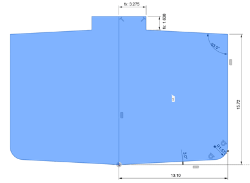
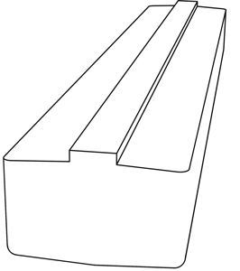
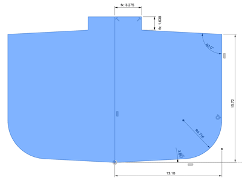
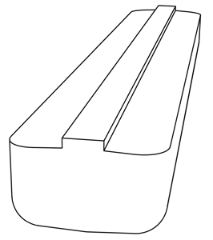
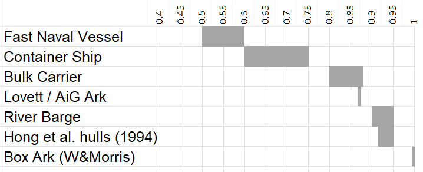

The Hebrew word for Ark is tebah.
What does tebah mean?
Can't say for sure. Maybe a rescue vessel
"some protective quality of divine origin."48
Cohen, C. "Hebrew tbh: Proposed Etymologies." JANES 4 (1972): 51.
Tebah (תֵּבָה) occurs 26 times for Noah's vessel (Genesis 6–9) and twice for Moses' basket (Exodus 2:3, 2:5). It is never used for any other object in any Hebrew text — just the ark and the basket. This paper examines common arguments for the box reading.
With Noah's Ark, what do we mean by a "box"?
There is a term for the boxyness of a ship hull called the block coefficient Cb. It is the underwater volume compared to a perfectly rectangular box (Cb=1). The hull of a bulk carrier might be around 0.8, and a racing yacht 0.2 or so. As a hull gets more streamlined, the block coefficient goes down.
The well-known Hong study said "we estimated the form of the Ark's hull as that of a barge-type ship, ... the shape of the Ark provided by KACR (Korea Association of Creation Research) is depicted, but it is slightly modified in the bilge radius, the dead rise, and the camber of the upper deck for the present investigation."

Hong study image.
Hong et al did not give their Cb, nor can we reverse engineer Cb from stability results either — they used analytical formulas that assume a perfect box (Cb=1). This is confirmed using a numerical solution for a rectangular transverse section, which agrees exactly with Hong's data.*
To match the hull Cb, we are left with the hull image and their description about dead rise and bilge radius. Dead rise has the most effect - both ins Minimum dead rise is taken at 3 degrees (otherwise it will have little effect on improving stability). With a bilge radius of 3 cubits (1.6 m at cubit of 0.45 m) the cross section is shown below. This radius continues up the vertical edges. This gives Cb=0.95, which is definitely a barge.


This looks more boxy than the Hong image, so it appears they used a lower Cb than 0.95.


Increasing the bilge radius to match the Hong image requires a radius of about 9 cubits (4.716 m), giving a Cb=0.905. This is low for a barge, closer to a "barge-like ship" as Hong states.
Block coefficients for various ships compared with popular ark hulls

Note that Hong modified the Morris hull to make it more ship-like. Why? Because a barge is not usually designed for rough seas. They need approved tow plans, weather routing, round-the-clock radio contact with the tug ( according to IMO MSC/Circ.884 (1998) — Guidelines for Safe Ocean Towing). Hong brought the Cb down into "barge-like ship" territory. Closer to a 0.9 than a 0.95.
So what defines a box? The term barge is often used interchangeably for box, and barges can range from 0.9 to 0.98. When people claim "Noah's Ark was box-like" it should be safe to interpret this as a Cb of roughly 0.95, (unless they include Hong's "barge-like ship", which is a not so boxy 0.9).
The Ark Encounter hull (AE hull), with a computed Cb=0.8738 is 7% below a "box" and only 3% below "barge-like ship" of the Hong study. The AE hull is a very full ship (slow in the water but holds a lot of cargo), or a streamlined barge (better in rough water). We could call it a 'barge-like ship".
Ok we have our definition for a box-like Noah's Ark (Cb>0.95). Does the original word for Noahs' Ark, Tebah (תֵּבָה), mean box - or what? We now focus on the common arguments for a box-like ark.
Tebah is the Egyptian word for coffin or box
The most significant tradition attributes to Brugsch (1867) the proposal that tebah derives from Egyptian ḏbꜣ.t — chest, coffer, sarcophagus. Direct examination of Brugsch's Wörterbuch (Vol. 4, dict. p.1628) shows his actual equation was Egyptian teb → Coptic THBE/TAIBL → Hebrew תָּבָה — a T-B root correspondence that is phonologically coherent. The subsequent equation of ḏbꜣ.t with tebah misrepresents what Brugsch wrote. Erman (1892) accepted the connection2 — publishing it as † ḏbt (etwa *tēbet) Kasten, Sarg: תֵּבָה Kasten (Brugsch), with an obelus marking it as a confirmed loanword, and attributing it to Brugsch without a page reference. Direct examination of all seven volumes of Brugsch's Wörterbuch did not locate this equation. What Brugsch actually wrote, at Vol. 4, dict. p.1628, was a connection between Egyptian teb (chest, sarcophagus) → Coptic THBE/TAIBL → Hebrew תָּבָה → Arabic تابوت — a clean T-B → T-B correspondence. The ḏbt equation Erman attributed to him is a different Egyptian root entirely. Erman later silently dropped it from the authoritative Wörterbuch der Ägyptischen Sprache (1926); neither the ḏb3.t entry (Wb. 5:561) nor the tbt entry (Wb. 5:261) makes any reference to Hebrew tebah. BDB (1906) embedded the equation regardless: "prob. Egypt. loan-word from t-b-t, chest, coffin."3 It has been copied ever since.
This etymology never tackles why the author of Genesis would borrow a foreign word when Hebrew already has an identical word — aron (אָרוֹן, 202 occurrences), a covered chest, a box, or a coffin. Moses himself used aron for the Ark of the Covenant and Joseph's coffin in Egypt.4 As Cohen states,5 the Egyptian word ḏbꜣ.t is never used for boats in Egyptian texts — it only ever denotes land-based funerary objects. Cohen goes on to show that Egyptology lost support for this idea. Back in 1892 the Egyptologist Erman had initially agreed with Brugsch, but later changed his mind, omitting the equation from his authoritative Wörterbuch der Ägyptischen Sprache in 1926.7 Yahuda tried to rescue the Egyptian connection, pairing up db't and tbt with the Egyptian word for boat — dpt. Spiegelberg explicitly demolished Yahuda's move in 1929,6 saying Yahuda had the misfortune of confusing db't "chest" with dp.t "ship," two words that "have nothing to do with each other." Cohen takes Spiegelberg's critique as the authoritative rebuttal, as did most scholars. It didn't stop there. As Cohen explains, tebah was again ignored in Lambdin's specialist Egyptian loanword catalogue in 1953.8
Cohen's 1972 paper deals devastating blows to each Egyptian word association, and has not been rebutted since. Corresponding with Cohen in 2004, he reiterated to me that his paper 'has been cited many times and that he still stood by what he said back then'.910 Cited yes, but not rebutted. Little wonder that BDB's own qualifier — "probably" — was eventually dropped by every tradition that copied it. HALOT has since lowered the verdict to "open."37
Wenham (1987) asserts Egyptian etymology at p.172, listed alongside BDB and Driver as asserting the loanword claim — without citing Cohen.33 Hoffmeier (1997) asserts Egyptian etymology without engaging Cohen.34 Spoelstra (2020) accurately quotes Cohen's demolition of the Egyptian etymology and confirms Cohen's functional conclusion — "terminus technicus for a life-preserving receptacle." Instead of leaving it there, he comes up with a novel paradigm — blending Cohen's "protective quality of divine origin" with a palette of ziggurats, covenants and cosmic death-waters. Cohen deleted the Egyptian word for coffin, so Spoelstra agrees, invents the "contra-coffin" (that makes you live instead of die), escapes the "cosmic death-waters" and lands on a mountain top in the ziggurat ark (Götterschrein). For the now mystical contra-coffin link he uses Yahuda, who had already been demolished by the same Cohen who led him to life-preserver — and by Spiegelberg, whom Cohen cited, and whom Spoelstra also cites via Cohen, making the oversight three layers deep. None of these fancy ideas work for the basket though. Baby Moses had no mountain-top sacrifices to end his voyage. Spoelstra then invokes the Ark of the Covenant as the destination of Moses' basket contra-coffin journey — ignoring that Moses himself called the Ark of the Covenant aron (אָרוֹן), not tebah, in 202 subsequent occurrences. If tebah carried covenant/sacred-structure meaning, Moses had forty years and the perfect opportunity to use it. He didn't. Confused yet? Well, you need to come up with something new if you want a PhD.35
Cohen's "protective quality of divine origin" works nicely for the ark, with directions from God himself. The baby basket had no divine specification — just a desperate mother and some reeds. "Rescue vessel" fits both. All these writers treat Noah's Ark as fiction. Cohen, honest as he is, calls Moses' baby basket an allegory of Noah's ark. No wonder the arguments get increasingly complicated and illogical.
Even the phonology of matching the letters תֵּבָה to ḏbꜣ.t ( or TBH and DBT) is dubious. Brugsch himself — the man credited with proposing the equation — explicitly rejected a cognate proposal at Vol. 2, p.628 of his own Wörterbuch because the two words sound differently ("dem ganz anderen lautenden Worte"). The ḏbꜣ.t → tebah equation fails by his own stated standard. Of the three consonants, one is a match (B), one arguable (T is transposed), and one a mismatch (H and D) — not a valid cognate by modern phonological standards. Not that you need to be a philologist to find it unconvincing that two words in different languages are "probably" the same word if they share the same middle letter.
Looking beyond textual crticism, there are other problems with the Egyptian DBH idea. As far as it means a "box", ancient Egyptian basket, boxes are hard to find in this shape. The basket that Jochabed grabbed (or quickly built) was almost certainly round or oval shaped, since reed baskets suit coil-formed construction. 11 Ancient ocean-going ships are even harder to find in a box shape. Rounded yes, box no.44 So both the ships and baskets are almost always rounded. So if box is unlikely, what about the coffin idea? Granted, Moses had a priveleged Egyptian schooling so knew all their words, but a "coffin"? Why would he say his mother put him in a coffin to die in front of his sister? Similarly, how is "coffin" a suitable word to describe a colossal vessel full of animals and provisions for the express purpose of keeping the occupants alive, and important enough to keep God waiting (1 Peter 3:20)? The Egyptian loanword proposed in 1867 finds no support from etymology, phonology, Egyptology, semantics, archaeology, or even just a logical explanation.
The primary source investigation behind these claims — including direct examination of Brugsch's Wörterbuch, Erman-Grapow's Wörterbuch, and HALOT — is documented in full with original document images at The Egyptian Etymology of Tebah: A Primary Source Investigation. The findings differ substantially from the received tradition.
{NOT SURE ABOUT THIS: Nevertheless the claim persists. Sarfati (2021), in a video explicitly titled about the shape of the ark, stated: "It calls it an ark, which etymologically that word seems to be related to an Egyptian word that means something like a chest or a sarcophagus, something like that. That may be an indication that it's a more boxy shape."47 No source is cited. The argument is the same as Brugsch 1867, repeated without awareness that it lost specialist support by 1926.}
The Translation Tradition
The LXX (c.250 BC) rendered tebah as kibotos — chest or box — for Noah's vessel.18 Jerome (c.400 AD) translated it as arca.19 Wycliffe (1382) coined "ark" from arca.20 Tyndale (1530) went back to the Hebrew, saw tebah, and still wrote "ark" — the English word was already fixed.21 The English word "ark" has no Hebrew ancestry. It is Greek → Latin → English only.
The LXX does not consistently translate tebah as kibotos. For Moses' basket it used thibis — defined by Liddell-Scott as "a small basket made out of strips of papyrus."22 The same Hebrew word, two different Greek translations. The Alexandrian translators themselves recognised that Noah's vessel and Moses' basket could not share one geometric word — an implicit acknowledgement that tebah carries no consistent geometric meaning. Kibotos is also used for the Ark of the Covenant — nobody argues it is box-shaped on the basis of the word. The translation tradition confirms the box reading only if its internal inconsistency is ignored.
The Babylonian Parallel
The Babylonian flood vessel (Gilgamesh XI) is described as cubic.23 Cassuto cited Haupt (1927) to suggest Genesis and Gilgamesh share a common cubic conception.24 Westermann (1974) addressed this directly: "the descriptions and the designations each have their own history."25 HALOT (1999) cites this passage and concludes the flood vessel "was either a huge ship, or simply a ship."26 The Atrahasis flood vessel is eleppam rabîtam — a large ship.27 The Sumerian flood vessel is a huge ship.28 The Babylonian cubic dimensions are numerologically motivated — the sacred iku unit — not hydrodynamically derived. The parallel undermines the box reading rather than supporting it.
Three Dimensions is most likely a Box
Genesis 6:15 gives three numbers: 300 cubits long, 50 cubits wide, 30 cubits high. This is claimed to be defining a box.
Or maybe it is just a brief account. Consider the Titanic: 269 metres long, 28 metres wide, and 20 metres deep. Noah's Ark: was 157 metres long, 26 metres wide, and 16 metres deep. Which is bigger? The Titanic of course. When you compared those two sets of dimensions you never thought: "So, are you saying the Titanic was a box?". Three dimensions communicate scale and proportion; they say nothing about hull form.
The Genesis account of the ark is most certainly abbreviated. The Tabernacle instructions (Exodus 25–31) took about 2,400 Hebrew words across 7 chapters. Curtain dimensions, hook materials, ring colours, priest garment thread counts, incense recipes, oil compositions, precise measurements for every item of furniture down to the rings and poles. Noah's Ark, the vessel that saved the world's fauna, was described in about 100 Hebrew words (Gen 6:14–16). Three dimensions. Some rooms. Three of something (levels). An opening. A covering material. Great data, but very brief.
There is no mention of the number of animals. We wish. Obviously Noah didn't just start building nests — קִנִּים (qinnim, Genesis 6:14) — with no idea how many animals were coming. What is "lower, second and third" are they decks or what? We have to fill in the words with the most obvious logical conclusion — decks. The Hebrew שְׁלִשִׁים (shelishim, Genesis 6:16) means "thirds" — it doesn't say decks either, but three decks fit really well in the 30 cubit height. How much food? No numbers. Why is water never mentioned? God instructs Noah: "take with you every sort of food that is eaten" (Genesis 6:21). The Hebrew word for food — מַאֲכָל (ma'akhal) — specifically means solid food that is eaten. Water has its own Hebrew word, מַיִם (mayim), used hundreds of times in the Old Testament. Nobody thinks Noah omitted water because it only says "food". Yet "water" is much easier to explain than hull form. Silence on hull form does not mean it is most likely a formless box, just as Noah was not most likely to have no water.
Genesis 6:16 instructs Noah to make a tsohar (צֹהַר) for the ark — a word debated as window, rooflight, or a continuous ridge-like structure along the full length of the vessel. The reading as a continuous clerestory strip one cubit high all the way along has been used to imply a barn-like rectangular cross-section: flat roof, vertical walls, long roof window.47 A clerestory strip is equally compatible with a curved hull — ocean liners have them. The cross-section is not defined by the window.
Clearly we are not given a full specification. All the more then that some things will be missing from the instructions - like hull shape. To claim 300×50×30 is most likely a box is an argument from silence (argumentum ex silentio). Since exact shape details are not described, we must apply logic to fill in the details.
Cassuto (1964) went further, asserting that tebah "precisely" means parallelepiped and that "undoubtedly the Biblical narrative refers to such a structural shape and not to that of a ship."12 No philological source is cited for the geometric meaning. Cassuto's footnote 236 references only Haupt (1927) — a paper about the Babylonian vessel, not Hebrew etymology.14 "Precisely" signals confidence yet there is no derivation. Cassuto also cited modern Hebrew mathematical usage of tebah for cuboid as another confirmation.13 However this is circular reasoning: the mathematical term tebah = cuboid almost certainly entered Hebrew vocabulary from the box-reading tradition — the very tradition Cassuto is trying to confirm.
(NOTE: NOT SURE WHAT TO DO WITH THIS PARAGRAPH YET)
The Biblical Text
Genesis 6:14–16 describes rooms, three levels, a door, and a light source — architectural language applied to a vessel's interior. A ship also has rooms, levels, a door, and a light source. The absence of nautical vocabulary does not imply a box hull — it implies a specification written for a non-specialist audience. Genesis provides three of the ten parameters a naval architect needs to define a hull: length, beam, and depth. It says nothing about draft, block coefficient, bow geometry, stern geometry, or any hull form descriptor. Three dimensions specify a bounding envelope — not a hull. The container specification is not the hull specification. Genesis wrote one of them.
Simple calculations
Whitcomb and Morris (1961) used a short cubit and a box hull for simple animal capacity calculations.29 Assumed simplicity does not make it actually a box of course, but nor is it conservative on space - a box shape maximises space. A box is a perfect rectangular hull with a block coefficient Cb = 1. Fast naval vessels 0.5 to bulk Ships range from are usually aboutWith rounding or fairing into a very full ship with a Cb of 0.87 will give a hull volume of 87% of the equivalent box — a 13% reduction in usable space. This does not mean the box the correct hull form. A box is also convenient for directly calculating static roll stability. Hong gives these formulas analytically (Equations 11,12,13) as restoring arm GZ.
It is a box
A box can beach, a ship cannot
Cassuto argued that a ship-shaped Ark could not rest on the mountains of Ararat — a box rests on flat ground, a ship cannot.15 Modern bulk carriers have flat bottoms and routinely sit in dry dock or strand themselves on soft tidal flats. Grounding on rough or rocky ground (like the mountains of Ararat) is a different story — what you need are multiple sacrificial keels, like the Ark Encounter. A box-shaped vessel may not suffice on uneven rocky ground. More fundamentally, Cassuto's premise is wrong: Greek warships were flat-bottomed — confirmed by the flat stone slips found in ancient ship sheds — and were routinely hauled ashore across slipways.46 They were also built with mortise-and-tenon shell construction of cabinet quality. A flat bottom does not imply a box hull. The finest ancient shipbuilding tradition combined flat bottoms with shaped sides and integrated shell construction simultaneously.
A box is the simplest construction
Even in still water a floating
vessel is much more challenging than a building like a barn. It must handle water pressure pushing up on the bottom, and in on the sides, which itself is no mean feat. But waves are a lot worse. The hull must now perform like a bridge with loads completely reversing with every passing wave. This is called wave bending moment43 and will break a raft barn in two. Noah must diligently integrate the hull into one piece. Ancient shipbuilders would join every plank to adjoining planks with mortise-and-tenon joints — a structurally integrated shell that transfers shear loads continuously along the hull length. This is well documented in ancient Mediterranean ships: Phoenician (c.1300 BC), Greek (600s BC) and Roman (200s BC), and even earlier in Egypt.45 Greek triremes have been described as the pinnacle of wooden construction — surpassing anything built in the eighteenth century.46 So there is no simple construction for a vessel the size of the Ark to handle rough seas — it is serious shipbuilding.
It only has to float, so a box is adequate
It is well documented that ancient ocean-going ships were curved: Phoenician (c.1300 BC), Greek (600's BC) and Roman (200's BC), and even earlier in Egypt. Looking further afield, we still see curved hulls: Minoan, Viking, Chinese, Indian, Polynesian Box shaped hulls do not exist. Thousands of years of independent traditions unanimously rejected the box shape for open water. 44. Today with welded steel hulls built to maximise cargo and fit the Panama canal (pre-2016), a typical Panamax bulk carrier would be Cb = 0.82-0.85. That is far more boxy than ancient ships. However, the ark is not designed to travel. It is a giant lifeboat built for rough seas. Does that mean sharp corners do not matter? If we look at the typical lifeboats, offshore supply vessels and fishing vessels, they are all around Cb = 0.55 - 0.65. "Floating" in heavy seas is not easy, which is why rough seas favour a lower Cb. One clue often missed in the Hong study is that shorter hulls were better than Noah's Ark in a confused sea 40. In this study, a shorter, wider ark (Hull 9) is a clear winner, while a shorter, taller ark (Hull 5) is a whopping 250% stronger (on Mw alone). It looks like the Biblical ark is too long for a lifeboat role in a random sea. Did God make a mistake? Perhaps there an additional requirement, such as surviving a wind-driven regular sea state without getting trapped side-on to the waves. This could throw the occupants dangerously, and possibly end in capsize. One solution is to ensure directional stability by weathervaning, something far more difficult to achieve with a box shaped hull.42
Noah Ark did need to be "steered somewhere"
It is not steered to go "somewhere", but passively aligned with the wind — by itself — without the crew doing anything. Sarfati (2021) makes exactly this argument: "they're not there to be steered... it wasn't designed to steer anywhere."47 But "steer anywhere" implies navigation to a destination. Weathervaning is not navigation — it is passive alignment with the wind by hull geometry alone. The vessel still ends up wherever wind, waves, and current take it. It will still end up in a random location, just like a box would. So neither are navigated, and both are drifting ships. The question is "Which one do you prefer to drift on?" The AE hull ended up with a Cb=0.87, to provide a safer and less injurous ride. By comparison, Hong et al. (1994) conducted a seakeeping study at KRISO finding the Genesis proportions near-optimal — using a box-like hull throughout.30 Hong states explicitly: "all hull forms in this study had a rectangular cross section." They also included dead rise and radiused corners, without stating the Cb — estimated at around 0.94. 39 This is recognised as a barge type hull. The AE hull at Cb = 0.87 is less box-like than Hong's, putting it between a full-bodied ship and a barge. 41 This 7% lowering of Cb reduces accelerations and improves directional stability in wind-generated waves (Gen 8:1). Nothing to do with being "steered somwhere".
If it only drifts it is not a ship
Cassuto further argued that since the Ark moved by wind and water rather than sail, it is not a ship.16 Cohen demolished this in footnotes 10–11: Hebrew hālak is used for ships (Is. 33:21; Ps. 104:26) and Akkadian alāku is standard for ship movement including passive drift.17 Genesis 7:18 uses וַתֵּלֶךְ — the Ark went upon the face of the waters of the מַבּוּל (mabbul) — overwhelming, world-engulfing, dynamic floodwaters. It traveled for five months, endured the wind sent by God (Gen 8:1) and would have travelled a substantial distance with zero navigation. That is not floating in place or bobbing. It is a drifting ship — which is still a ship.
Scholarly Consensus says box
Morris (1971) asserted "the Hebrew word itself implies this" box shape — no citation, no philological source.31 Cohen published one year later.32Scholarly consensus in this case is transmission by copying. BDB embedded "probable" in 1906; the tradition copied the conclusion and dropped the qualifier. A related assertion, occasionally stated but rarely developed, is that tebah's restricted occurrence — only Genesis 6–9 and Exodus 2, nowhere else in the Hebrew Bible — implies a technically defined object with a specific fixed form. The weakness is that it proves too much: the same uniqueness equally supports Cohen's reading, that tebah denotes only one thing — a life-preserving vessel. Uniqueness of usage is neutral between the two readings.
END OF BOX CLAIMS....
The Process of Elimination
Tebah fails every proposed geometric meaning on two independent tests: does the meaning work for both occurrences, and did Hebrew already have a better word?
| Proposed meaning | Fails because | Hebrew word that Moses used for other things? |
|---|---|---|
| Ship | Moses' basket is too small to be a ship — so the word has no scale | oniyah — 31× |
| Box/cuboid | Moses Papyrus reeds almost certainly oval and circular forms particularly common in ancient Egyptian basketry | aron — 202× |
| Coffin | Both tevah's have living occupants, active missions, provisions, contingency plans. The ark is oversized for a coffin box. | aron — 202× Gen 50:26 |
| Chest | Noah's ark too big for a chest/box. | aron — 202× Exodus 25 |
| Container | Too generic — both vessels are specifically purposeful | keli — 320+× |
Moses had the right word for every proposed meaning and chose not to use it — twice, deliberately, for two objects that share only one property: both preserve life.
What Tebah Does Mean
The Targum Onkelos renders tebah as Aramaic תֵּיבוּ — not a translation but the same word in the sister dialect, same root ת-ב, same consonants, different morphological ending.36 The Aramaic speakers imposed no geometry because they needed no interpretation. They already had the word. The box required Greek librarians in Alexandria to invent it and German philologists in the 1860s to explain it.
HALOT (1999) replacement for BDB — concludes: "decision open"; "the vessel used by the hero of the deluge was either a huge ship, or simply a ship."37 Two independent lines — Cohen's Hebrew philology and Westermann's ANE cuneiform scholarship — reach the same conclusion without citing each other. Tevah does not tell us the shape, but the ark and the basket have the same purpose.
After concluding that none of these ideas are workable, Cohen proposes a different tack - a semantic one. The word might be do do with the function of the ark and the basket - suggesting a lifeboat or some sort of rescue vessel.
The Engineering Consequence
The Ark Encounter hull incorporates some construction simplifications — larger bilge radius for laminated beams, adjusted keel locations, and thicker skeg extension. Cb = 0.87 is measured directly from the geometry sent to Troyer Architects on 18 April 2011, which was used as the hull form definition of the Ark Encounter.38
With Cb = 0.87 the Ark lies at the upper end of full-bodied ship forms — near the upper limit of a Great Lakes bulk carrier, and not too far from ocean-going barges with a Cb of 0.92 and above. Naval architect Jim King (Creation Museum, 2005) proposed Great Lakes bulk carriers as the nearest modern analogue — independently confirmed by the CAD calculation.41 For scale: at 157m × 26m, the Ark falls just under the Panamax class limit45 — small enough to transit the Panama Canal, yet larger than any timber vessel ever built. Neither "just a barge" nor "a conventional ship" — a purpose-built vessel in the transitional region between the two, with enough hull form to weathervane effectively in the מַבּוּל but not streamlined for travel speed at the expense of cargo capacity.
The Ark Encounter hull at Cb = 0.87 sits below Hong's barge-type hulls, which had rectangular cross-sections modified for bilge radius and dead rise — no block coefficient is stated in the paper, but Cb in the range 0.91–0.94, depending on dead rise angle and bilge radius.30,* The Ark Encounter hull was not in Hong's comparison set. At 157 metres, the length follows the Lovett cubit paper and the shape is the physical result of taking Cohen seriously. The word carries no shape. The dimensions specify an envelope. Naval architecture fills the envelope with the hull form that best handles the flood voyage.
Conclusion
The Egyptian etymology fails on four independent grounds. Cassuto's geometric assertion is unreferenced, its modern Hebrew evidence is circular, and its two engineering arguments are demonstrably wrong. The translation tradition is internally inconsistent. The Babylonian parallel has its own independent history from Genesis. The biblical text specifies a container, not a hull. The creationist literature inherited the box without checking the Hebrew. Scholarly consensus is transmission by copying.
Tebah fails every proposed geometric meaning for Moses' basket, and Hebrew had a better word for every proposed meaning that Moses demonstrably knew and chose not to use.
What remains: a functional descriptor with no geometric content. A vessel word defined entirely by purpose. The etymology is undetermined. The shape is not in the word.
Tebah probably means rescue vessel, which is about the only thing that works for both the ark and the basket.
T. Lovett, 2026
References
Numbered in order of first citation in the text.
↩1. Brugsch, H. Hieroglyphisch-Demotisches Wörterbuch. 7 vols. Leipzig: J.C. Hinrichs, 1867–1882.
First proposed the equation tebah = Egyptian ḏbꜣ.t. Reasonable for 1867 before rigorous comparative phonological rules had been established.
↩2. Erman, A. "Das Verhältnis des Ägyptischen zu den Semitischen Sprachen." ZDMG 46 (1892): 123.
Accepted Brugsch's equation in print. Silently withdrew it 34 years later — see ref 7.
↩3. Brown, F., Driver, S.R., and Briggs, C.A. A Hebrew and English Lexicon of the Old Testament. Oxford: Clarendon Press, 1906. p.1061.
"prob. Egypt. loan-word from t-b-t, chest, coffin (Brugsch, ErmanZMG xlvi 123)." BDB's qualifier "prob." was dropped by every tradition that copied it.
↩4. Cohen, C. "Hebrew tbh: Proposed Etymologies." JANES 4 (1972): 37–51, fn.14. Full text →
"תבה was apparently first equated with Egyptian db't by H. Brugsch... This equation was accepted by A. Erman... It has been accepted by biblical scholars ever since. Note, however, that this equation is conspicuously absent from A. Erman and H. Grapow, Wörterbuch der Ägyptischen Sprache... and T. O. Lambdin, 'Egyptian Loan Words in the Old Testament'... though not specifically denied by these authors."
†. Cohen, C. "Hebrew tbh: Proposed Etymologies." JANES 4 (1972): 51. Full text →
Cohen's summation: "In summation, we have shown that none of the solutions heretofore presented satisfactorily explain why the term תבה was used in both the biblical flood story and the story of Moses' birth. Two would-be solutions revolve, in one way or another, around the Egyptian db't, which never has anything to do with boats, and therefore cannot be compared... One partial answer to the problem, which is not without difficulty, but which may nevertheless be leading in the right direction, involves the similarity in description and preparation of the respective vessels in the Akkadian flood story and the story of Sargon's birth. The author of the story of Moses' birth might likewise have called the receptacle into which Moses was placed by the same name that was given to the biblical ark in the Hebrew flood story, because of some protective quality of divine origin which the latter possessed... This literary allusion is certainly not the entire answer to the problem (which surely cannot be completely solved until the meaning of תבה is established on a sound philological basis), but it is hopefully a step in the right direction."
↩5. Cohen, fn.14 cont. "Never are either of these words used in Egyptian texts for boats." The proposed donor words db't and tbt denote land-based funerary objects only.
↩6. Cohen, p.38 and fn.14. Consonantal correspondence: Egyptian db't (DBT) vs Hebrew תֵּבָה (TBH) — one certain match (B), one arguable (T shifted), one mismatch (D and H). Spiegelberg's reaction to Yahuda: "ihm [ist] das Missgeschick zugestossen, dass er... db't... 'Kasten'... und das Wort dp.t 'Schiff', die gar nichts miteinander zu tun haben, zusammen wirft." (He had the misfortune of confusing db't 'chest' with dp.t 'ship', which have nothing to do with each other.)
↩7. Erman, A. and Grapow, H. Wörterbuch der Ägyptischen Sprache. 5 vols. Leipzig: J.C. Hinrichs, 1926–1931. Vol. V, pp.261, 561.
Authoritative Egyptian dictionary. The tebah/ḏbꜣ.t equation is conspicuously absent — Erman's silent retraction of his 1892 acceptance (ref 2).
↩8. Lambdin, T.O. "Egyptian Loanwords in the Old Testament." JAOS 73 (1953): 145–155.
Specialist Egyptian loanword catalogue. Tebah does not appear.
↩9. Cohen, C. Personal communication to T. Lovett, 2004.
Cohen confirmed he still stood by the conclusions of his 1972 paper and that it had been cited many times without rebuttal.
↩10. Cohen, p.51 (conclusion).
"none of the solutions heretofore presented satisfactorily explain why the term תבה was used in both the biblical flood story and the story of Moses' birth... This literary allusion is certainly not the entire answer to the problem (which surely cannot be completely solved until the meaning of תבה is established on a sound philological basis)."
↩11. Wendrich, W. "Basketry." In Ancient Egyptian Materials and Technology, edited by P.T. Nicholson and I. Shaw, 254–267. Cambridge: Cambridge University Press, 2000.
Oval and circular forms were particularly common in ancient Egyptian basketry, produced naturally by the dominant coil construction technique — the standard method from predynastic times (5000–3000 BC) onward. See also: UCL Digital Egypt, "Basketry in Ancient Egypt: Techniques," ucl.ac.uk.
↩12. Cassuto, U. A Commentary on the Book of Genesis. Part Two. Jerusalem: Magnes Press, 1964. p.60, fn.236.
"The original signification common to them all seems to have been: an object made in the shape of a parallelepiped, and this is precisely the primary meaning of the Hebrew word tēbhā... Undoubtedly the Biblical narrative refers to such a structural shape and not to that of a ship." No philological source cited. Fn.236 references only Haupt (1927) — ref 14. Note that the correct term is cuboid, which is a right parallelopiped, also known as a box.
↩13. Hebrew Wikipedia. תיבה (גאומטריה). he.wikipedia.org
Confirms modern Hebrew uses tebah as the mathematical term for cuboid. Almost certainly derived from the box-reading tradition under examination — not independent evidence.
↩14. Haupt, P. "The Ship of the Babylonian Noah." Beiträge zur Assyriologie 10 (1927).
Discusses the Babylonian flood vessel from Gilgamesh XI. Cited by Cassuto (ref 12) to support the parallelepiped claim — a paper about the Babylonian vessel, not Hebrew etymology.
↩15. Cassuto, p.41.
"the subsequent statement (Gen. 8:4): 'the ark came to rest...upon the mountains of Ararat,' implies an object that can rest upon the ground; this is easy for an ark to do since its bottom is straight and horizontal, but not for a ship."
↩16. Cassuto, p.41.
"The sentence, 'and the ark went [הלך] on the face of the waters' (Gen. 7:18) is not suited to a boat, which is navigated by its mariners, but to something that floats on the surface of the waters and moves in accordance with the thrust of the water and wind."
↩17. Cohen, p.38, fn.10–11.
"neither the biblical text nor comparative Semitic philology bear out Cassuto's contentions. As for his first objection (Gen. 7:18), the verb הלך is used elsewhere for ships not only in biblical Hebrew, but in Akkadian as well." Biblical: Is. 33:21; Ps. 104:26; 2 Chron. 9:21; 20:36–37. Akkadian example (fn.11): "If his ship arrives here from Cyprus" (PRU III, RS 16.238:10–11).
↩18. Septuagint (LXX). Genesis 6–9; Exodus 2:3,5. Alexandria, c.250 BC.
Renders tebah as kibotos (κιβωτός) for Noah's vessel; as thibis (θῖβις) for Moses' basket. The inconsistency is the key evidence against a geometric reading.
↩19. Jerome. Biblia Sacra Vulgata. c.383–405 AD.
Renders Noah's tebah as arca (chest/box); Moses' as fiscella scirpea (rush basket). Jerome preserved the LXX's distinction — two different words for the same Hebrew word.
↩20. Wycliffe, J. Wycliffe Bible. 1382.
First English Bible. Translated from the Vulgate, not from Hebrew. Coined "ark" from Latin arca. The English word has no Hebrew ancestry.
↩21. Tyndale, W. Tyndale Bible. 1530.
First English translation directly from Hebrew. Tyndale saw tebah and still wrote "ark" — the English word was already fixed after 148 years of Wycliffe usage.
↩22. Liddell, H.G., Scott, R., and Jones, H.S. A Greek-English Lexicon. 9th ed. Oxford: Clarendon Press, 1940. p.801b.
"thibis (θῖβις): a small basket made out of strips of papyrus." The LXX's word for Moses' basket — confirming it cannot be rectangular.
↩23. Gilgamesh XI. In A. George, The Babylonian Gilgamesh Epic. Oxford: Oxford University Press, 2003. Tablet XI, lines 28–31.
The Babylonian flood vessel is described as perfectly cubic — numerologically motivated by the sacred Babylonian iku unit, not by hydrodynamic requirements.
↩24. Cassuto, p.60, fn.236. Cites Haupt (1927) (ref 14) on the Babylonian vessel to suggest Genesis and Gilgamesh share a common cubic conception.
↩25. Westermann, C. Genesis 1–11: A Commentary. BK 1/1. Neukirchen-Vluyn: Neukirchener Verlag, 1974. pp.564–566. English trans. Minneapolis: Augsburg, 1984.
"in Gilgamesh 11 it is to be noted that a gigantic cubic chest is understood to be a ship, while in Gn 6 the ark, which had already been likened to a ship, is described as a box; this shows that the descriptions and the designations each have their own history."
↩26. Koehler, L., Baumgartner, W., and Stamm, J.J. The Hebrew and Aramaic Lexicon of the Old Testament (HALOT). Leiden: Brill, 1999. Vol. IV, tebah entry.
"Schmidt loc. cit. 69 leaves the decision open." "In ancient near-eastern traditional literature the vessel used by the hero of the deluge was either a huge ship, or simply a ship." Gold standard modern Hebrew lexicon — replacement for BDB.
↩27. Lambert, W.G. and Millard, A.R. Atra-Ḫasīs: The Babylonian Story of the Flood. Oxford: Clarendon Press, 1969. p.126, line 6.
Eleppam rabîtam — "a large boat/ship." The Atrahasis flood vessel is unambiguously a ship, not a box.
↩28. Kramer, S.N. Sumerian Mythology. Philadelphia: American Philosophical Society, 1944. Rev. ed. 1961.
The Sumerian flood vessel is má-gur gur — a huge ship.
↩29. Whitcomb, J.C. and Morris, H.M. The Genesis Flood. Philadelphia: Presbyterian and Reformed, 1961.
Used box hull for animal capacity calculations — not because tebah means box but for calculation convenience. No philological argument for box shape.
↩30. Hong, S.W., Na, S.S., Hyun, B.S., Hong, S.Y., Gong, D.S., Oh, K.J., and Yang, J.H. "Safety Investigation of Noah's Ark in a Seaway." CEN Technical Journal 8, no. 1 (1994): 26–36. Full text →
"all hull forms in this study had a rectangular cross section." and "it is slightly modified in the bilge radius, the dead rise" With a dead rise of a few degrees13 variants tested, all Cb ≈ 0.91–0.94. AiG Ark Encounter at Cb = 0.87 was never in Hong's comparison set.
↩31. Morris, H.M. "The Ark of Noah." Creation Research Society Quarterly 8, no. 2 (1971): 142–144.
"The Ark was thus to be essentially a huge box (the Hebrew word itself implies this), designed essentially for stability in the waters of the Flood rather than for movement through the waters." No citation for the philological claim. Published one year before Cohen (refs 4–10).
↩32. Cohen, p.37 (opening).
"The term תבה occurs in the Hebrew Bible in but two episodes, the story of the flood, and the story of Moses' birth. Its usages in these two cases are radically different. In the former, תבה denotes a colossal ark, while in the latter, the meaning is a receptacle of infant size."
↩33. Wenham, G.J. Word Biblical Commentary: Genesis 1–15. Waco: Word Books, 1987. p.172.
Listed alongside BDB and Driver as asserting Egyptian etymology for tebah (Spoelstra, fn.7; fn.41). Does not cite Cohen (1972).
↩34. Hoffmeier, J.K. Israel in Egypt: The Evidence for the Authenticity of the Exodus Tradition. Oxford: Oxford University Press, 1997.
Asserts Egyptian etymology without engaging Cohen.
↩35. Spoelstra, J.J. Life Preservation in Genesis and Exodus: An Exegetical Study of the Tebā of Noah and Moses. Contributions to Biblical Exegesis and Theology 98. Leuven: Peeters, 2020. Originally PhD dissertation, Stellenbosch University, 2013.
Most recent peer-reviewed academic treatment of tebah. Accurately quotes Cohen's demolition of the Egyptian cognates (p.197): "never are either of these words used in Egyptian texts for boats." Then sidesteps it by accepting Yahuda's rescue — ḏb.t etymologically underlying ḏbȝ.t, making it "a legitimate cognate to convey a type of caïque" (p.198) — without engaging Spiegelberg (1929), who had demolished that same move. Concludes: "tebâ is a terminus technicus for a life-preserving receptacle" — Cohen's functional conclusion — while still maintaining Egyptian etymology. The central argument (Cohen) is quoted but not rebutted.
↩36. Targum Onkelos. Torah. Standardised in Babylonia, c.2nd century AD.
Renders tebah as Aramaic תֵּיבוּ — same root ת-ב, same consonants, different morphological ending only. Applied to Noah's vessel and Moses' basket. No geometric imposition.
↩37. HALOT, Vol. IV (see ref 26).
"the vessel used by the hero of the deluge was either a huge ship, or simply a ship." Citing Westermann (ref 25).
↩38. Lovett, Tim. 2006. "Which Cubit for Noah's Ark?" Journal of Creation 20, no. 3: 71–77. creation.com/cubit
Establishes Royal Egyptian Cubit (524mm). Ship-shaped hull. Primary design consultant for AiG Ark Encounter from 2004. Cb = 0.87 from CAD geometry AR-003-20110418, Troyer Architects, 18 April 2011.
↩39. Block coefficient (Cb).
The ratio of a hull's displaced volume to the volume of its bounding box (length × beam × draft). Cb = 1.0 is a perfect box; Cb = 0.50 is a fine-lined vessel. Ocean-going bulk carriers typically run Cb = 0.80–0.87; barges 0.90–0.95.
↩40. Confused sea / Hong results.
A confused sea is a random, multi-directional wave field with no dominant direction — waves arrive from every direction simultaneously. Hong et al. tested 13 hull variants in this sea state and ranked the Genesis proportions (300×50×30 cubits) third overall, behind two shorter, wider hulls.
↩41. King, J. Presentation at the Creation Museum, 2005.
Naval architect Jim King proposed that a Great Lakes bulk carrier is a suitable modern analogue to the Ark hull form — full-bodied and optimised for cargo rather than speed. The Ark Encounter hull has a Cb of 0.87, which sits at the upper end of full-bodied ship forms, consistent with a laker rather than an ocean-going vessel built for rapid travel.
↩42. Weathervaning and directional stability.
A vessel without propulsion will be end up side-on to the waves due to wave yawing moment — the turning effect of the waves. Side on (beam sea) is a capsize risk. When wind and waves are travelling in the same direction, this dangerous situation could be overcome by using the wind to generate a restoring moment ,trying to align with the wind provided it is stronger than the wave yawing moment. This is the weathervaning principle. A high-Cb box has stronger wave yawing moment and less natural steering at the bow, so it will require a greater wind-catching area.
↩43. Wave bending moment.
Wave bending moment is the primary longitudinal load case for ship structural design — the hull acting as a beam with loads reversing with every wave cycle. IACS Unified Requirement S11 (Rev. 7, 2022) prescribes the vertical wave bending moment as Mw = k · C · L² · B · (Cb + 0.7) × 10⁻³ kN·m, where k = 110 (hogging) or 190 (sagging). For Noah's Ark at L = 157m, B = 26m, Cb = 0.87, the sagging wave bending moment is approximately 1,747 MN·m — comparable to a Panamax bulk carrier.
↩44. Casson, Lionel. Ships and Seamanship in the Ancient World. Princeton: Princeton University Press, 1971. Rev. ed. 1986.
The standard reference for ancient Mediterranean seafaring. Documents hull forms across Phoenician, Greek, and Roman traditions — all curved, none box-hulled for open water. For hull construction technology and mortise-and-tenon joinery, see also: Steffy, J.R. Wooden Ship Building and the Interpretation of Shipwrecks. College Station: Texas A&M University Press, 1994.
↩45. Steffy, J.R. Wooden Ship Building and the Interpretation of Shipwrecks. College Station: Texas A&M University Press, 1994.
Authoritative reference for ancient hull construction technology. Documents mortise-and-tenon shell-first construction across Phoenician, Greek, and Roman shipbuilding traditions. Uluburun wreck (c.1300 BC) is the earliest confirmed example. The technique produces a structurally continuous shell capable of resisting wave bending moment as a unified girder.
↩46. Casson, Lionel. Ships and Seamanship in the Ancient World. Princeton: Princeton University Press, 1971. Rev. ed. 1986.
p.202: "The Greco-Roman shipwright, as we are now aware, through the discovery of numerous ancient wrecks, created his own form of shipbuilding one so refined that it more resembles cabinet work than carpentry." And: "He started with a shell of planks. But instead of using casual joinery, he locked these together with mortises set as close as the joints in a piece of furniture."
p.203: "As far as we can tell, the building of ships in this impressive fashion was peculiar to the Greco-Roman world and the sole method it used for every form of vessel from seagoing freighters to lake skiffs. Very likely it goes back at least to Homer's day, and it was still employed well into the Byzantine period. The technique of pinning a skin to a pre-erected skeleton which was to produce the European craft of the great days of sail came into widespread use no earlier than the Middle Ages."
p.89 (on the trireme): "We can conclude from the flat stone slips found in the ship sheds that it was flat-bottomed... Every effort was made to keep the hull as light as it could be; as has been ably said, an ancient warship was much like an overgrown racing shell."
p.208: Below the keel was a false keel of resistant timber to withstand the wear and tear of hauling onto shore or across slipways.
Significance: Greek warships were flat-bottomed — for slipway haul-out, not hull form ideology — yet built with mortise-and-tenon shell construction of cabinet quality. Cassuto's claim that a flat bottom implies a box hull, and that box construction is simpler, are both contradicted by the standard reference on ancient shipbuilding.
↩47. Sarfati, Jonathan. "The Size and Shape of Noah's Ark." Creation.com Talk (series). YouTube, November 25, 2021. youtube.com/watch?v=Ozc2_CMTQH4. Playlist: Creation.com Talk.
A video explicitly titled about the shape of Noah's Ark. When asked directly whether the ark was "boxy or more boat-like," Sarfati answered: "I think the word tebah seems to indicate a very boxy shape in my view" — no philological basis given. He then cited (1) Egyptian loanword etymology, (2) the Moses basket parallel, (3) the tsohar as a continuous factory-style roof window, and (4) that the ark was not designed to "steer anywhere." All four are addressed in this paper.
↩48. Cohen, C. Hebrew tbh: Proposed Etymologies. JANES 4 (1972): 51.
"In summation, we have shown that none of the solutions heretofore presented satisfactorily explain why the term תבה was used in both the biblical flood story and the story of Moses' birth... The author of the story of Moses' birth might likewise have called the receptacle into which Moses was placed by the same name that was given to the biblical ark in the Hebrew flood story, because of some protective quality of divine origin which the latter possessed... This literary allusion is certainly not the entire answer to the problem (which surely cannot be completely solved until the meaning of תבה is established on a sound philological basis), but it is hopefully a step in the right direction."
→ Full paper with extended arguments, transmission chain, and additional references
↩* Hong stability — analytical vs numerical verification.
Hong et al. used analytical formulas for righting moment that assume a perfect box hull (Cb=1). This can be confirmed by reproducing their Table 3 results numerically. Using the GZ simulator (Lovett, 2024) with the same hull dimensions and KG values, all 13 hull variants reproduce Hong's published AR values to 4 significant figures, confirming the box assumption in their analytical method. Cubit = 0.45m throughout (Hong's value).
| No. | φlim (°) | AR analytical | AR numerical |
|---|---|---|---|
| 0 | 31 | 0.805 | 0.8044 |
| 1 | 53.5 | 0.321 | 0.3214 |
| 2 | 40.8 | 0.694 | 0.6935 |
| 3 | 22.6 | 0.794 | 0.7933 |
| 4 | 14.9 | 0.699 | 0.6994 |
| 5 | 42 | 0.821 | 0.8211 |
| 6 | 35.8 | 0.840 | 0.8411 |
| 7 | 26.6 | 0.739 | 0.7396 |
| 8 | 21.8 | 0.643 | 0.6427 |
| 9 | 21.8 | 0.964 | 0.9642 |
| 10 | 26.6 | 0.887 | 0.8875 |
| 11 | 35.8 | 0.701 | 0.7013 |
| 12 | 42 | 0.547 | 0.5474 |
† Hong hull Cb sensitivity analysis. Block coefficient was calculated for a representative Hong-type hull (135m × 22.5m × 13.5m) using the same CAD methodology as the Ark Encounter hull. Four variants tested:
| Dead rise | Bilge rad | Vert rad | Vol (m³) | Cb | Loss vs box |
|---|---|---|---|---|---|
| 5° | 3m | 3m | 29,381 | 0.91 | 9.2% |
| 0° | 3m | 3m | 31,624 | 0.98 | 2.3% |
| 5° | — | — | 30,012 | 0.93 | 7.3% |
| 3° | 2m | 2m | 30,507 | 0.94 | 5.8% |
Dead rise dominates: 5° dead rise alone reduces Cb by ~7%; bilge/vertical radius alone reduces Cb by ~2%. Hong's modifications (dead rise and bilge radius stated but not quantified) most likely place his hulls in the range Cb = 0.91–0.94. The Ark Encounter hull at Cb = 0.87 sits 4–7% below this range, with the difference concentrated entirely in bow and stern.